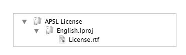
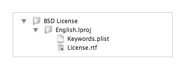

Iceberg vous permet dans le panneau Documents de choisir pour un package ou metapackage une licence utilisateur parmi une liste de licences prédéfinies. Le texte de celles-ci peut être fixe ou comprendre des informations personnalisables.
Ce document décrit comment ajouter ses propres modèles de licence utilisateur.
Emplacement des modèles de licence utilisateurLes modèles de licence utilisateur doivent être situés dans le dossier suivant :
|
Par défaut, Iceberg propose les modèles de licence utilisateur suivants :
Si vous êtes à la recherche d'une autre licence, vous pouvez trouver une liste de licences approuvées par l'Open Source Initiative (OSI) sur le site opensource.org. Il ne vous restera alors plus qu'à créer un modèle pour cette licence. Format des modèles de licence utilisateurIl existe deux formats de modèles de licence utilisateur : le format pour les licences à contenu fixe et celui pour les licences à contenu personnalisable.
Création d'un modèle de licence à contenu fixe
| 1 | Créez une nouvelle fenêtre dans le Finder. | ||
| 2 | Choisissez Aller > Aller au dossier… . | ||
| 3 | Tapez le chemin /Library/Application Support/Iceberg/Licenses Templates dans le champ texte et cliquez sur Aller. | ||
| 4 | Choisissez Fichier > Nouveau dossier et saisissez comme nom de dossier celui sous lequel la licence devra apparaître dans Iceberg. | ||
| 5 | À l'intérieur de ce dossier, créez un dossier pour chaque langue dans laquelle la licence sera disponible.
Si vous souhaitez que la même localisation de la licence soit disponible pour toutes les langues, créez un dossier unique nommé International.lproj. | ||
| 6 | Placez dans chaque dossier le fichier texte localisé de la licence utilisateur. Ce fichier devra se nommer License.rtf.
|
La hiérarchie finale des fichiers d'un modèle à contenu fixe doit ressembler à ceci :

Création d'un modèle de licence à contenu personnalisable
| 1 | Créez une nouvelle fenêtre dans le Finder. | |||||
| 2 | Choisissez Aller > Aller au dossier… . | |||||
| 3 | Tapez le chemin /Library/Application Support/Iceberg/Licenses Templates dans le champ texte et cliquez sur Aller. | |||||
| 4 | Choisissez Fichier > Nouveau dossier et saisissez comme nom de dossier celui sous lequel la licence devra apparaître dans Iceberg. | |||||
| 5 | À l'intérieur de ce dossier, créez un dossier pour chaque langue dans laquelle la licence sera disponible.
Si vous souhaitez que la même localisation de la licence soit disponible pour toutes les langues, créez un dossier unique nommé International.lproj. | |||||
| 6 | Placez dans chaque dossier le fichier texte localisé de la licence utilisateur. Ce fichier devra se nommer License.rtf.
| |||||
| 7 | Remplacez dans le texte de la license les informations que vous souhaitez rendre personnalisable par des MACROs. Une MACRO est une chaîne de caractères entourée par deux caractères % de chaque côté. Bien que cela ne soit pas obligatoire, il est plus facile de repérer les MACROs dans le texte de la licence si celles-ci sont écrites en majuscules.
| |||||
| 8 | Placez un fichier Keywords.plist au premier niveau du dossier du modèle de license utilisateur. Le fichier Keywords.plist est un fichier Property List standard représentant un dictionnaire. Chaque clé du dictionnaire correspond au nom d'une MACRO présente dans le texte de la license. La chaîne de caractères associée à cette clé doit être vide.
|
La hiérarchie finale des fichiers d'un modèle à contenu personnalisable doit ressembler à ceci :
